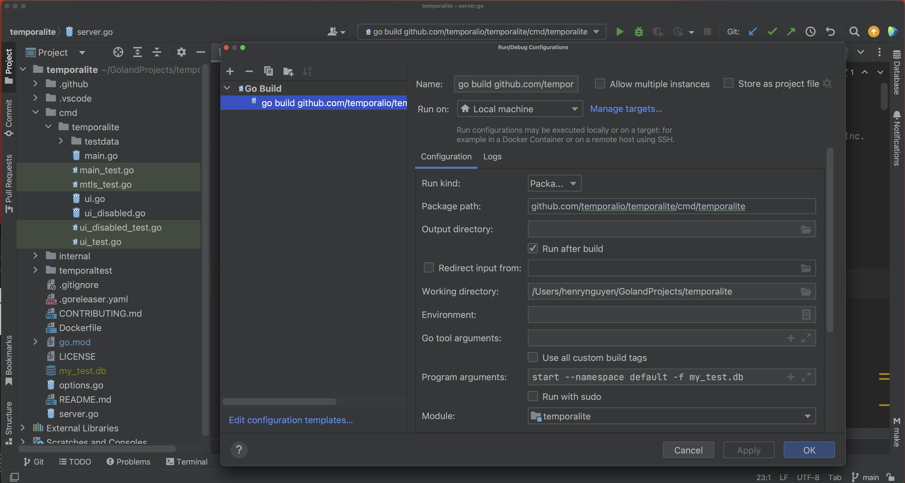
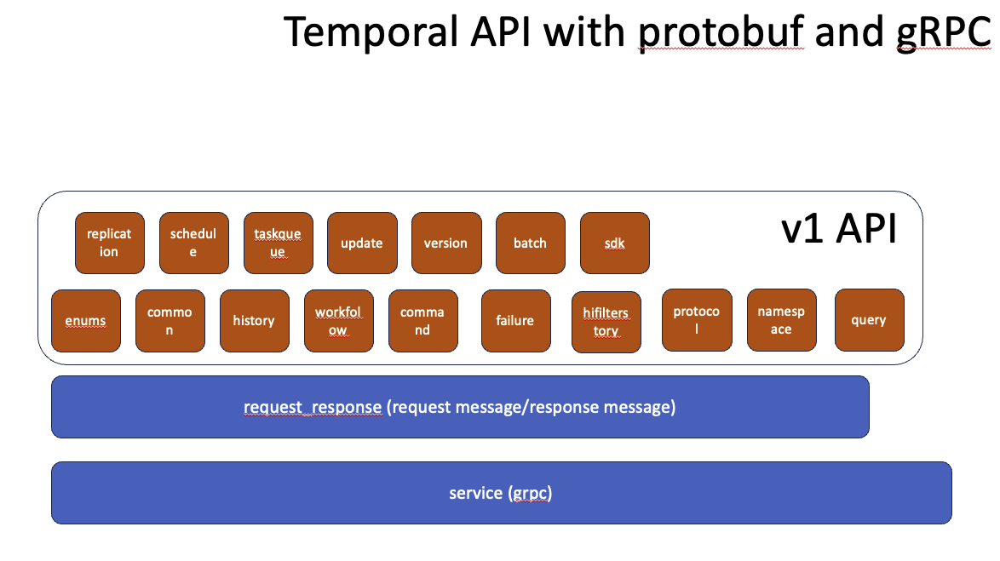
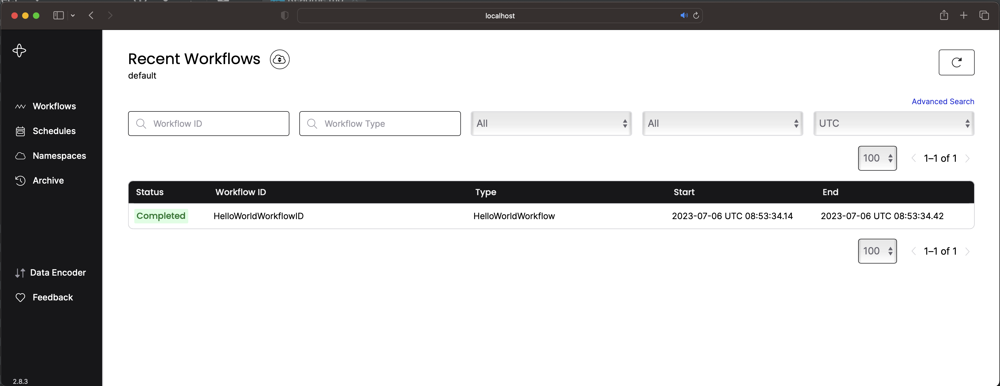
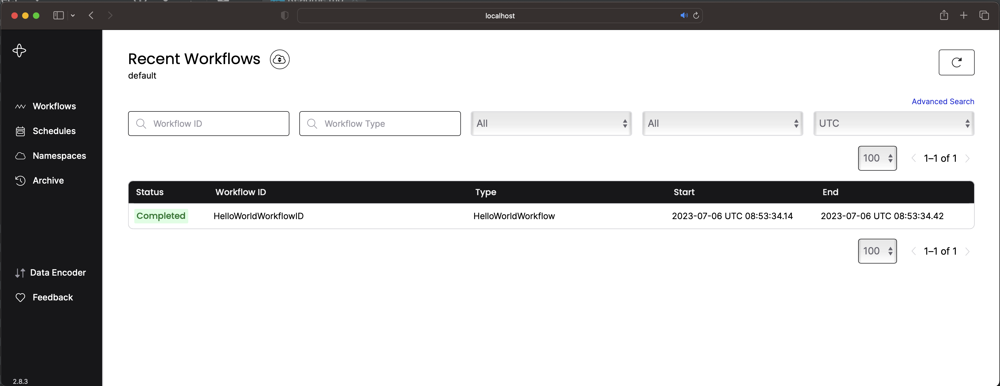
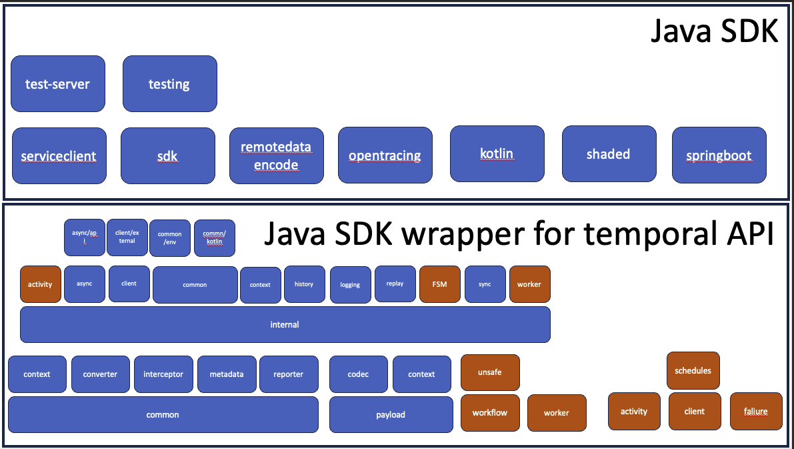

Temporal Skill
July 4, 2023
Introduction #
Finite State Machine and/or Workflow provides the deterministic paradigm to the software application development. Temporal addresses the Workflow part of the paradigm. Hopefully Temporal also addresses the Finite State Machine part of the paradigm. Let research into the technologies to find out if one could start with:
- The Workflow specification to the Temporal framework OR
- The Finite State Machine specification to the Temporal framework Further study into few internet pointers, It seems that TO-DO must be required to see how FSM and Temporal Workflow
Temporal Cluster #
At the heart of the Temporal framework is the cluster. It provides the deterministic mechanism to the workflow using kafka and g- rpc //TO-DO further study required. The Temporal cluster can be run as
- Standalone process
- For Mac
brew install temporal
OR
curl -sSf https://temporal.download/cli.sh | sh
temporal server start-dev
For a full list of options, run:
temporal server start-dev --help
The Temporal Server should be available on localhost:7233 and the Temporal Web UI should be accessible at http://localhost:8233.
- For Linux (To be added)
- For Windows (To be added)
- Docker/Kubernetes: prefer method to run Temporal cluster More to find out at here
Temporal Lite #
Reference 1 Temporal Getting Started Guide  The objectives to run Temporalite with the ability to debug using JetBrains GoLand:
- To understand how various temporal components work together
- To run the temporalite as docker (We still think to run it as temporalite docker as part of the development)
- To debug the application development
- To perform integration test during the development
- etc…
Temporal API #

[Temporal API Github] (https://github.com/henrynguyenattheitservice/temporal-api-java.git)
gRPC Services sepecifies in the protobuf files. #
We build the temporal API using JetBrains IntelliJ and JetBrains GoLand and see how the generated code used in the development of Java-SDK and Go-SDK. The objectives of the TemporalAPI are
- To understand the SDK Wrapper
- To understand the Temporal Server activities via debugging the Temporalite using JetBrains GoLand
- etc…
TemporalLite Database #
 
The objectives of the Temporal Database are

The objectives of the Temporal Database are
- To understand the data and/or information are being persisted
- To understand the data and/or information are being persisted when the temporal server crashes and recoveries
- etc…
Java-SDK #
DevEnv with JetBrains IntelliJ with Gradle OR Maven
- Reference 1 DevEnv “Set up a local development environment for Temporal and Java”
- Reference 2 “Run your first Temporal application with the Java SDK”
- Reference 3 “Build a Temporal Application from scratch in Java”
Temporal Java-SDK #

Step1: Code generation all the prootbuf and gRPC serviice using JetBrains IntelliJ #
Step2: Study Temporal Building Block or Components #
Workflow #
Worker #
Client #
Saga #
Step3: Debug Temporalite together with Running HelloWorld sample #
Run Temporalite in the Goland debug mode #
Run HelloWorld workflow and activity in the IntelliJ #
Go-SDK #
DevEnv with JetBrains Goland with Makefile
- Reference 1 DevEnv “Set up a local development environment for Temporal and Go”
- Reference 2 “Run your first Temporal application with the Go SDK”
- Reference 3 “Build a Temporal Application from scratch in Go”
Typescript-SDK #
DevEnv with JetBrains WebStorm
- Reference 1 DevEnv “Build a Temporal Application from scratch in TypeScript”
- Reference 2 “Build a Temporal Application from scratch in TypeScript”
Python-SDK #
DevEnv with JetBrains PyCharm
- Reference 1 “Set up a local development environment for Temporal and Python”
- Reference 2 “Build a Temporal Application from scratch in Python”